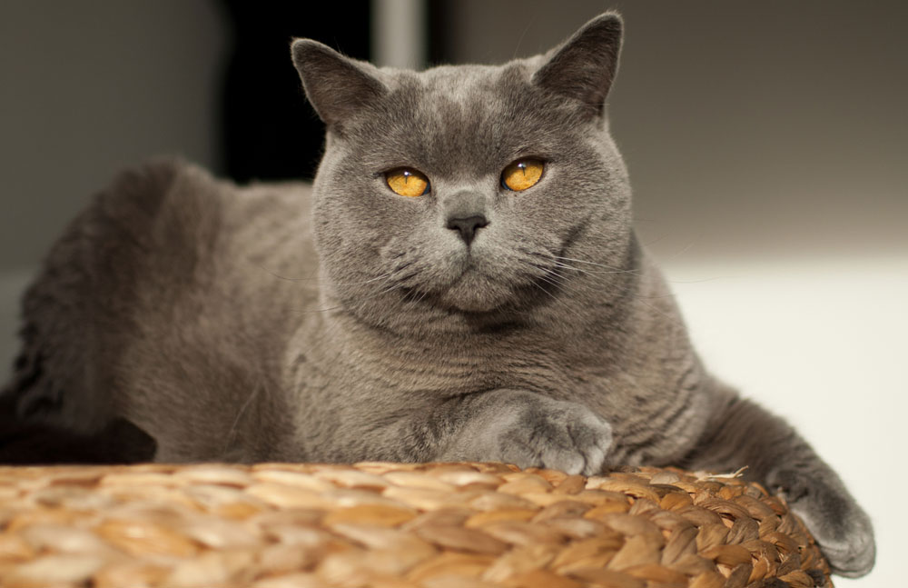
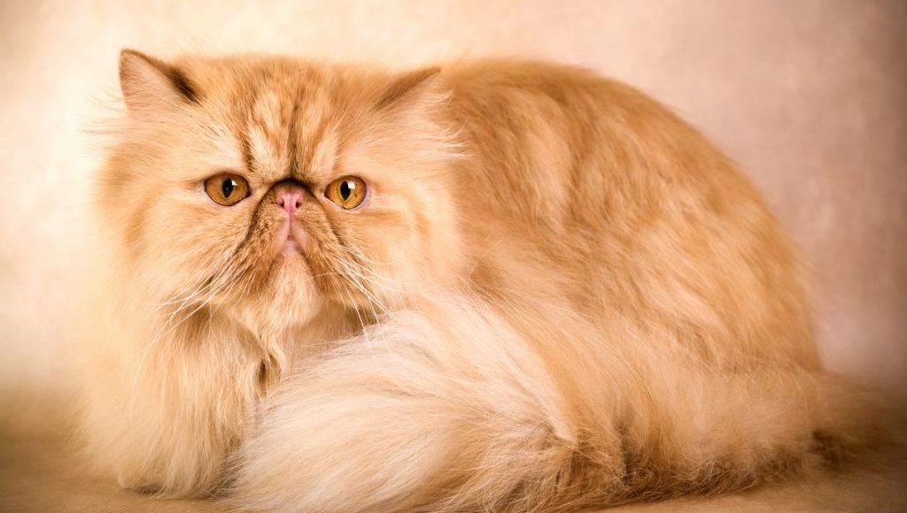

Это страница про котов
Ко́шка — домашнее животное, одно из наиболее популярных «животных-компаньонов». С точки зрения научной систематики, домашняя кошка — млекопитающее семейства кошачьих отряда хищных. Одни исследователи рассматривают домашнюю кошку как подвид дикой кошки, другие — как отдельный биологический вид. Продолжительность жизни: 12 – 18 лет (Прирученный)
Мир кошек удивительно многолик. На сегодняшний день существует более двухсот официально признанных кошачьих пород. Чтобы легко ориентироваться во всём многообразии, необходимо понять принципы классификации этих млекопитающих. Изначально виды кошек различали по длине шерсти. Существовало всего две категории: короткошёрстные и длинношёрстные. Но время показало несостоятельность такой систематизации: вследствие естественных мутаций или в результате работы селекционеров появились кошки с шерстью средней длины которых невозможно было отнести ни к одной из двух категорий. Плюс ко всему животные очень часто отличались по размеру: большие кошки, маленькие, средние — это тоже нужно было учитывать. Поэтому фелинологи предложили четыре варианта классификации кошек.
Здесь всего две категории: кошки с крепким телосложением и кошки — с изящным. К первым можно отнести короткошёрстных шартрезов, выведенных во Франции. Они отличаются массивным туловищем с тяжёлым костяком и сильными мышцами. Самые популярные представители породы с изящным телосложением — сиамские кошки. Активные, игривые, общительные и доверчивые — яркая противоположность шартрезам.
Типы шерстного покрова
- длинношёрстные/полудлинношёрстные (бирманская);
- короткошёрстные (русская голубая);
- с вьющейся шерстью (корниш-рекс);
- жёсткошёрстные (американская жёсткошёрстная);
- бесшёрстные (сфинкс).

Типы окраски
- одноцветные (гавана);
- двухцветные (рэгдолл);
- пёстрые (мейн-кун);
- c крапом (американская короткошерстная).
Типы рисунков на шерсти
- Тикинг – это чередование полос тёмного и светлого оттенка на одном волоске (абиссинские кошки, корниш-рекс).
- Табби – узор из сплошного однородного цвета на шерсти другого цвета (донской сфинкс, петерболд).
- Ван характерен для животного, у которого 5/6 шерсти окрашены в белый цвет (турецкая ванская кошка, британская кошка). 
- Мраморный табби – это узор с разводами, с «бабочкой» на спине или с «глазами» по бокам (экзотическая короткошёрстная кошка, британская мраморная кошка).
- Торби – черепаховый табби (мейн-кун, персидская кошка). 
- Сиамский рисунок обусловлен наличием специфического гена, при котором шерсть приобретает тёмный оттенок на холодных участках тела, а на тёплых – остаётся светлой (рэгдолл и сноу-шу).
- Комбинированный — сочетание нескольких рисунков (норвежская лесная кошка, бобтейл). Выбор домашнего питомца — дело непростое, особенно если учесть тот факт, что внешность обманчива. Маленький котёнок может оказаться большим проказником. Поэтому перед приобретением четвероногого друга обязательно почитайте описание пород кошек с характером.